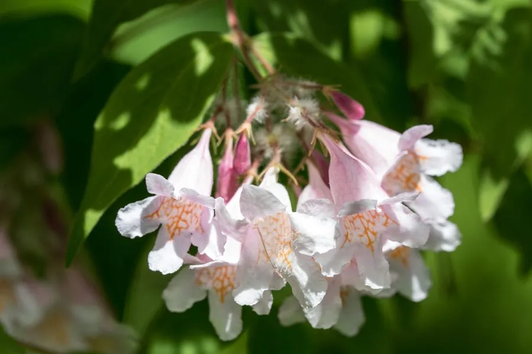

灌木与花木 · 植物界
猬实 Kolkwitzia amabilis

忍冬科落叶灌木，初夏开粉红色钟状花，花后宿存萼片密生刺毛如猬，中国特有的单种属植物，观赏价值很高。
- 分类
- 门被子植物门纲木兰纲目川续断目科忍冬科属猬实属
- 栖息环境
- 海拔 600–1500 米的山坡灌丛与林缘，喜光耐旱
- 地理分布
- 中国中部，以山西、陕西、甘肃、河南、湖北等地为主
- 保护级别
- 列入中国国家重点保护野生植物名录；野生种群稀少
物种志
猬实为忍冬科猬实属落叶灌木，高 1.5–3 米，枝条拱形下垂，幼枝被柔毛。叶对生，卵形至卵状椭圆形，全缘或疏生浅齿。伞房状聚伞花序顶生，花冠钟状，粉红色至淡紫色，喉部黄色，花期 5–6 月；果实为瘦果状核果，外被刺毛，形似刺猬，果期 8–9 月。
猬实原产中国中部，生于海拔 600–1500 米的山坡灌丛与林缘，是中国特有的单种属植物。它喜光，稍耐半阴，耐寒、耐旱，适宜疏松肥沃、排水良好的土壤。花期花团锦簇，花后宿存萼片密生刺毛，形如猬刺，故得名。猬实是优良的观花灌木，常植于庭院与公园；因分布区狭窄，野生资源已列入国家重点保护野生植物名录。
形态与习性
- 株高1.5–3 米，枝条拱形下垂
- 花期5–6 月，花冠钟状粉红色
- 果期8–9 月，核果密生刺毛
- 光照喜光，稍耐半阴
- 水分耐旱，忌积水
- 土壤疏松肥沃、排水良好的壤土
- 主要用途庭院与公园观花，花篱材料
趣味知识
- 猬实的果实密生刺毛，形似刺猬，因此得名。
- 它是中国特有的单种属植物，在忍冬科中分类位置独特。
- 猬实的花期正值初夏，粉红色花朵密集下垂，观赏效果极佳。
- 欧美园林从中国引种猬实后，培育出多个观赏品种。